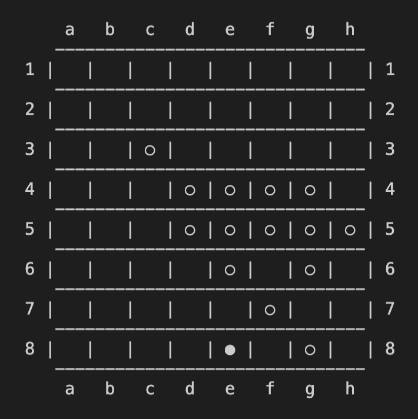

Stage 6 パスと勝敗を判定する
6-2 勝敗を判定する機能を実装する
さて、ゲーム中の動作について、あとは UI (ユーザーに見える部分) 以外に特にいじるものはないのですが、ゲームが終わった後のことを考えないといけませんね。

は？どういうこと？
ゲームが終わったら「あなたの勝ちです!!」みたいなの必要だと思いませんか？
ああ、そういうことね。言ってる意味がわからんかった。
ということで、今回は勝敗を判定する機能を実装していきます。
~~~~~~~~~~~~~~~
とはいえ勝敗以前にそもそもゲームが終了したかを判別できないといけませんから、まずはその機能を実装していきます。ゲーム終了の条件は
- 両者とも石を置けるマスがない場合
- どちらかが負けを認めた場合
のいずれかですよね。
上のやつってさ、要は盤面全部埋まった場合だよな
いえ、そうとも限りません。

は？
こういう場合ですよ。

気持ちわる。なんだこの盤面
まあそうなるのもわかりますが、これだとまだ盤面埋まっていないのに両方とも石おけませんよね。
ということで、両方とも石を置けない場合を確かめるときは、ちゃんと全ての空いているマスを調べてあげないといけないことになります。
~~~~~~~~~~~~~~~
とはいえ、実はあまり新しいメソッドを作ってあげる必要もないんです。ここでは 6-1 で作った passjudge を応用してあげます。
ゲームセットなのに、パス？
ええ、passjudge メソッドで調べたのって「player はどこかに石を置くことができるか」ってことでしたよね。つまり
両方ともパスしないといけない状態
であればゲームセットなのわかります？
もうちょい馬鹿でもわかるように言ってくれよ
この場合を考えてあげましょうか。
これで黒番だったら、パスですよね。
まあ置くところないもんな
で、白のターンになりますが、白はパスですか？
だからゲームセットなの？
そういうことです。
~~~~~~~~~~~~~~~
では実際にコーディングしていきましょう。まずは board.py ファイルの gamesetjudge メソッドから見ていきます。
def gamesetjudge(self, logger=None):
logger = logger or self.logger
# if either can put, it's not gameset
if self.passjudge(BLACK) == False or self.passjudge(WHITE) == False:
logger.debug('either can put yet')
return False
else:
self.game_status = GAME_SET
return True
説明いらないくらいわかりやすいでしょ？
いや、説明せぇよ、テメェの仕事やろ
いつも通りロガーを設定します。
def gamesetjudge(self, logger=None):
logger = logger or self.logger
自分か相手のどっちかがパスしなくていい時は「ゲームセットでない」False をリターンです。
# if either can put, it's not gameset
if self.passjudge(BLACK) == False or self.passjudge(WHITE) == False:
logger.debug('either can put yet')
return False
それ以外では「ゲームセットである」True をリターンするのですが、その前に game_status という変数を GAME_SET にしておきます。
else:
self.game_status = GAME_SET
return True
これ何やってんの
ゲームの進行状況を「進行中」GAME_PRC から「ゲーム終了」GAME_SET に変更しているんです。Stage 7 でやりますが、この機能によって勝敗の判別が分かれたりするので、忘れずに入れておいてください。
~~~~~~~~~~~~~~~
まだ終わりませんよ。今度は countpiece メソッドを実装します。
def countpiece(self, logger=None):
logger = logger or self.logger
# count up all pieces
self.b_count = 0
self.w_count = 0
for row in range(SIZE):
for col in range(SIZE):
if self.board[row][col] == BLACK:
self.b_count += 1
elif self.board[row][col] == WHITE:
self.w_count += 1
return [self.b_count, self.w_count]
それぞれのプレーヤーの石の数を数え上げてリストにしてリターンするだけです。説明なんて

しろ
...すいませんでした。
def countpiece(self, logger=None):
logger = logger or self.logger
最初は例の如くロガーを設定します。
そのあとは b_count に黒の石の数を、w_count に白の石の数をカウントしていきます。
# count up all pieces
self.b_count = 0
self.w_count = 0
for row in range(SIZE):
for col in range(SIZE):
if self.board[row][col] == BLACK:
self.b_count += 1
elif self.board[row][col] == WHITE:
self.w_count += 1
これ最後のは elif じゃなくて else じゃダメなの？
ダメです。board[row][col] の状態は WHITE, BLACK とあと EMPTY がありますから、else にすると石を置いていないマス目も数えてしまうことになります。
こういう時とか空いてるマス数えちゃダメでしょ？
return [self.b_count, self.w_count]
最後にカウントをリストにまとめ上げてリターンすれば終了です。